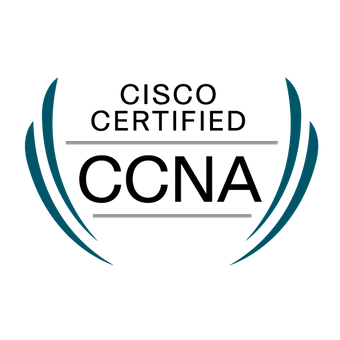
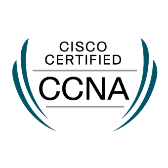

Thank you and welcome...
I am a technology enthusiast well versed with computer networks and internet infrastructure, with more than half a decade of experience operating large scale service provider networks where I have; developed, built and managed complex network designs for enterprises, financial institutions and diplomatic missions. Currently I'm focused on network development, virtualization, automation and network programability; essentially development of applications to support easy deployment and management of services; all the while automating network operations.
I think deeply about things and want others to do likewise. To me, a big problem is just a bunch of small problems combined. I focus on separating them out. It’s all a matter of approach and at the pulsing core of intelligence is the ability to simplify complex problems and solve them like I strive to do. I study a lot, I look into a lot of things and long for the day when I can communicate with the hum of the data center via telepathy and feel a fiber cable’s emotional pain via touch.
I work for ideas that have impact and learn from experiences and people. In an alternate life; I am a seasoned historian, a huge fan of mythology, art and history. I have a niche for video games and music production—sound mixing.
Hall of fame
 


Appreciation
Thank you so much for your attention, you are far too kind. Writing of the blog posts consumes a lot of time, it is my hope you enjoy reading and you learn something useful, enjoy your visit. Thanks again.